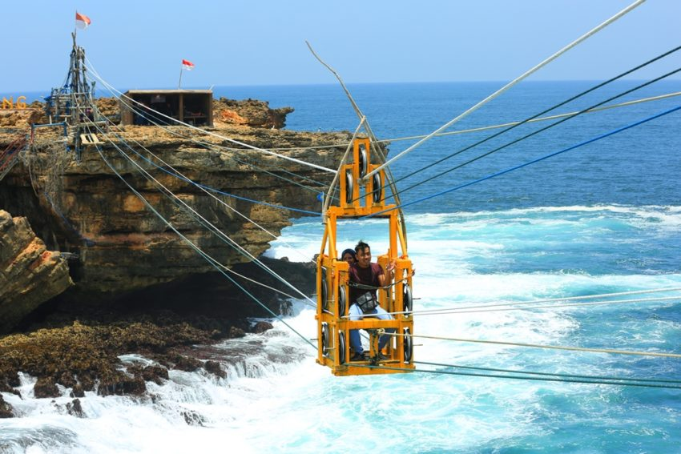

Wisata

Wisata
Jogja merupakan kota dengan sejuta kenangan, semua orang yang melakukan liburan
wisata ke jogja pasti tidak bisa move on dari bayang-bayang keindahan khas yang hanya bisa
dijumpai di jogja. Tak heran jika banyak sekali wisatawan yang berulang kali memilih kota
jogja menjadi salah satu destinasi kota wisata yang wajib untuk didatangi lagi dan lagi.
apa sih yang membuat wisatawan selalu tertarik untuk datang lagi ke kota yang dikenal juga
sebagai kota pelajar ini? tentu yang paling utama adalah karena wisata jogja yang menarik
untuk dikunjungi. Tak bisa untuk dipungkiri lagi jika jogja selalu ramai kedatangan banyak
wisatawan yang berburu mengunjungi berbagai tempat wisata di jogja. Hal tersebut dikarenakan
popularitas wisata yang ada jogja dikenal unik, bukan hanya dikenal oleh wisatawan Indonesia
saja namun juga para wisatawan mancanegara. Budaya yang sangat kental menjadikan ciri khas kota
jogja selalu mengena di hati tiap wisatawan yang berkunjung. Dalam artikel kali ini akan membahas
beberapa tempat wisata jogja mulai dari yang biasa, terbaru, unik sampai dengan wisata anti mainstream
yang tersembunyi di jogja. Tentu semua wisata tersebut wajib anda kunjungi untuk merasakan pengalaman
baru ketika berkunjung ke jogja. Penasaran? Simak terus artikel ini dengan baik ya.